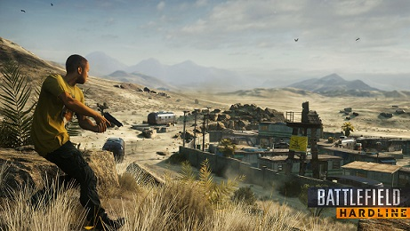

Battlefield Hardline Review
Posted on by John Doe

Do you want to play more Battlefield-style multiplayer, with some new modes and an ever-so-slight spin on said multiplayer's scale and weaponry? That's the question you need to ask if you're considering a purchase of Battlefield Hardline. It seems to be functional (which is more than you could say about its predecessor when it launched in 2013), and it plays like a Battlefield game, generally speaking. Either that's something you're interested in paying full price for or, for whatever reason, you aren't. The other parts of Battlefield Hardline aren't interesting enough to further justify the purchase, so I probably wouldn't take the single-player campaign into account too heavily if you're on the fence.
Read more Comments